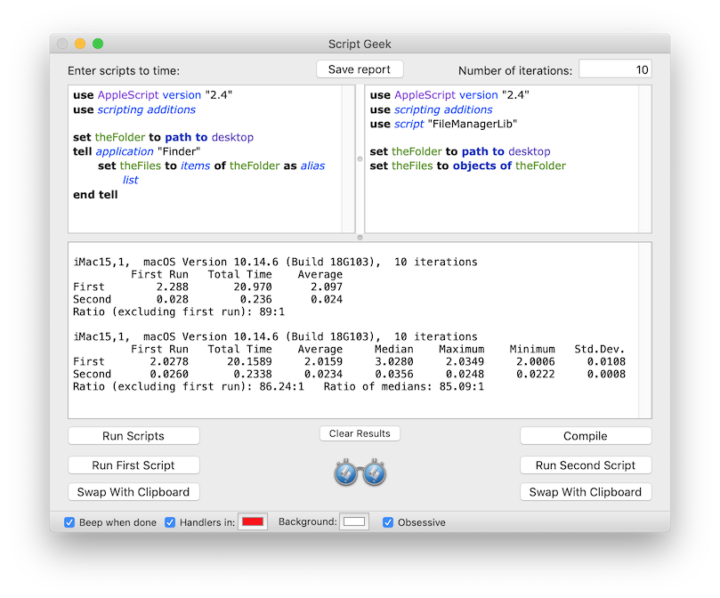

Script Geek 2.0
Script Geek.app is designed to do one thing: time how long a script takes to run.
When you press a run button (Run Scripts, Run First Script or Run Second Script), the scripts will be compiled, run once (with the time taken noted), and then run for however many iterations you have designated. The latter runs are full runs: the script is not run in an AppleScript repeat loop. The average is the total time taken for these latter runs, divided by the number of iterations. The result appears in the results view below the scripts.
The Swap With Clipboard buttons can be used to swap scripts in and out. At the bottom of the window you can set whether the app beeps when a run is complete, a separate color to be applied to handler calls, and a background color for the script panes. The Obsessive checkbox increases the number of decimals displayed, and shows more detailed statistics. Clicking on the logo at the bottom of the window, or choosing View -> Change Orientation, will toggle the arrangement of the two script panes between vertical and horizontal.
Compiles and errors are signified in the results area in red, and compiled code is saved between launches. The Save Report button at the top saves a report in rich text format, including all runs back to the last compile, plus the source code of both scripts. For long running scripts, a Stop button will appear in place of the icon at the bottom, and running will be stopped at the end of the current iteration.
The code is run on a background thread, so running AppleScriptObjC code that requires the main thread is likely to result in a crash.
The code is minimal, to avoid adding overhead, and the only claim of accuracy is that it will probably be more accurate than whatever you're using now — and hopefully more convenient. When iterating, the scripts are run in alternating order to minimize any artefacts.
Script Geek.app 2.0 requires macOS 10.10 or later.
Script Geek.app is © 2014-19 Shane Stanley, and free. There is no guarantee: you use it strictly at your own risk.
Click here to download version 2.0.1.
Click here to download version 1.2.7, which runs under macOS 10.7 and later.